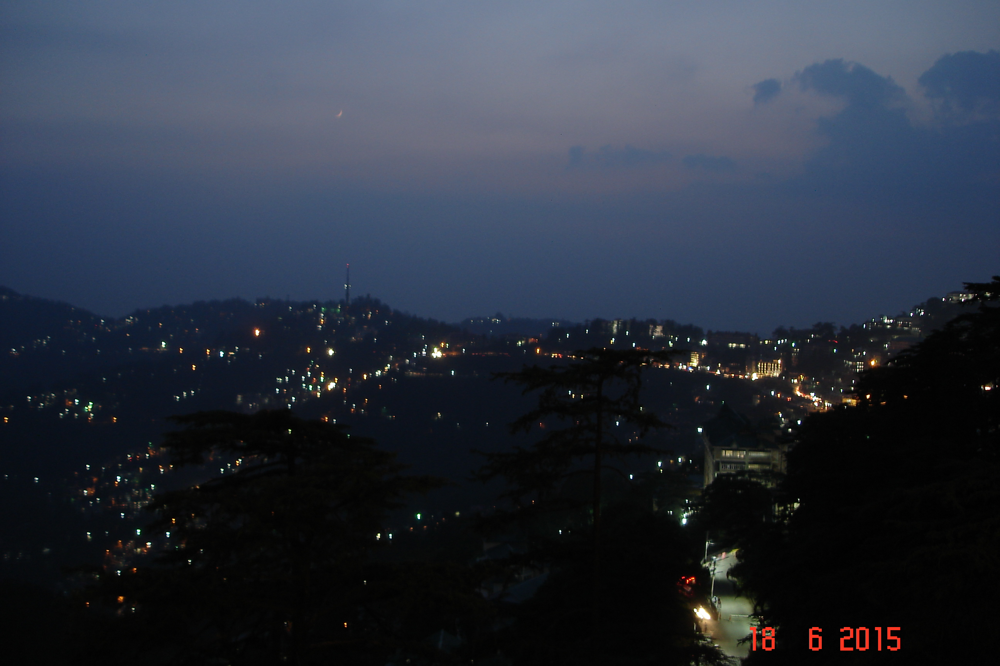
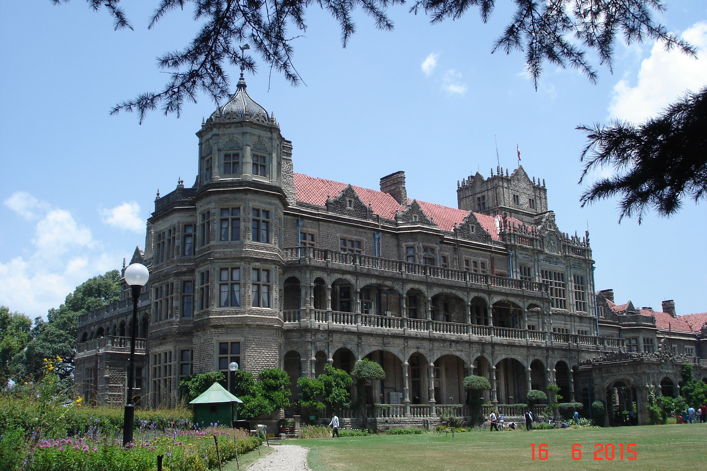

Shimla Trip 2015
[link—standalone]
In this inaugratory post of this photography blog (important enough to be given a seperate page rather than a simple tag on the communal tags page), I shall be posting some pictures from my 2015 trip to Shimla, Himachal Pradesh, India. Clicked with a Sony point and shoot camera almost as old as me with a puny yet very high quality 5 mega pixel sensor these pics might even bring many mordern AI powered triple quadruple pentuple whatever cameras to shame.

A nightscape

The Viceroy's Lodge

A vintage Ambassador with some murals painted on. My artistic photographer self thought the lighting made it look cool.

Some flowers

Some flowers and a bee
These images were from one of my very first photography adventures. Having a camera in my hands was a big experience for me at that young of an age. Even though the camera being quite low on resolution provided such high image quality is something that I am still reminded of when I hear the phrase quality vs quantity. This very set of images appeared in my school annual magazine along with a little write-up about my trip that I now seem to have lost. Not a very good display of my photography skills, as being just a beginner with a camera I was quite amatureish with my settings and lighting. This may not be the best of what I have clicked, or the most intresting but this was my begining hence there could be nothing better than this to inagurate my photoblog which btw was speical enough to not just be thrown into a little communal tags page and be given a page of its own. (its still on the index though).
Fri, 29 Apr 2022 17:02:16 +0530